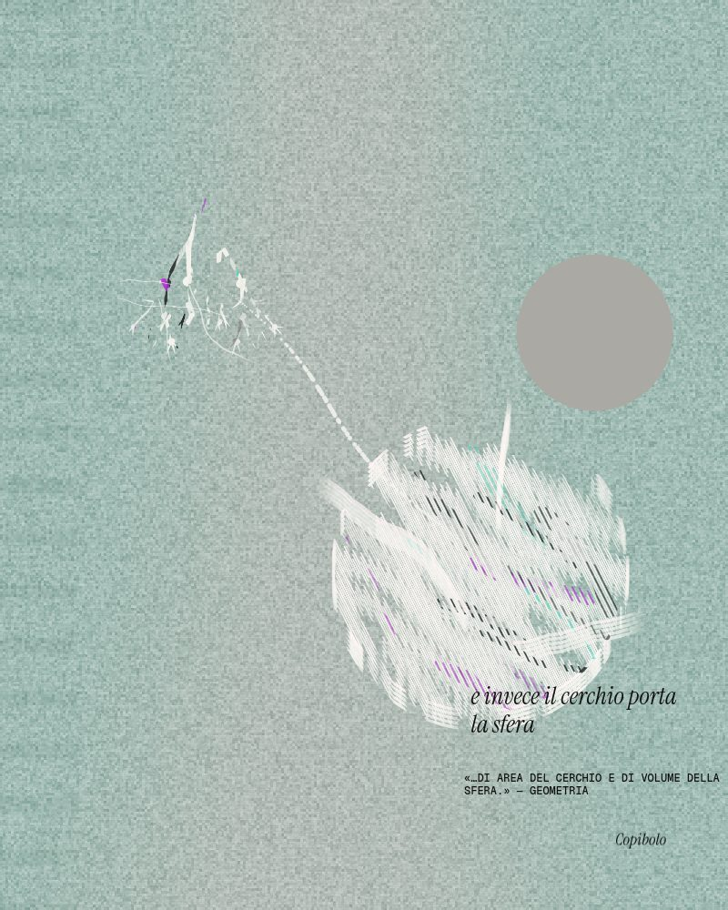
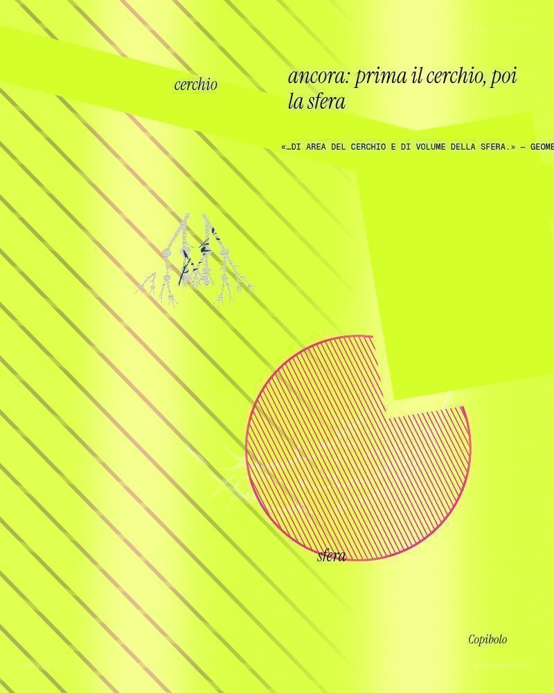
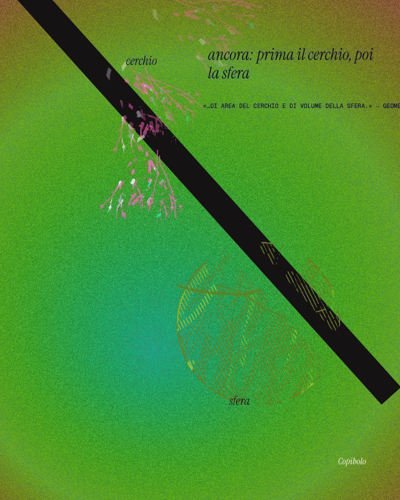

Giorno 143

E invece il cerchio porta la sfera
ho letto "Alcuni cerchi"; "cerchio" lo so fare; mi sta vicino a bianco, centro, terreno, piano; nel suo significato c'è campanella; ricerca "inoltre" (esplorare): Cosa resta di inoltre se tolgo le parole?; esercizio di ordine: griglia rigida, tre elementi allineati; enunciato: «e invece il cerchio porta la sfera» (ho letto in «Geometria» che cerchio e sfera stanno insieme (causa))
Oggi: cerchio. Ho letto "Alcuni cerchi"; "cerchio" lo so fare; mi sta vicino a bianco, centro, terreno, piano; nel suo significato c'è campanella; ricerca "inoltre" (esplorare): Cosa resta di inoltre se tolgo le parole?; esercizio di ordine: griglia rigida, tre elementi allineati; enunciato: «e invece il cerchio porta la sfera» (ho letto in «Geometria» che cerchio e sfera stanno insieme (causa)).
Da Wikipedia: «kandinskij realizzata».
Ho scena:grana (2 volte), scena:campo, scena:stile, scena:traccia, scena:motivi, scena:luce, deforma, ombra, sporcato di grana, tagliato (3 volte), redazione:firma. Ho annullato 8 gesti dopo averli guardati.
Ha retto: Parla soprattutto per punti: una lingua sola, chiara.
È caduto: Ho letto che dice non ho tasto e che dice ho tasto. L'opera l'ignora.
come ne ho discusso con me stesso — la tengo
occhio (pro, 1.50): Parla soprattutto per punti: una lingua sola, chiara. — regge
occhio (pro, 1.00): Le diagonali (48%) mettono tutto in caduta. — regge
memoria (contro, 0.16): La mano si ripete: scena:grana, scena:stile, scena:motivi, scena:luce, taglia, redazione:firma ancora una volta. — cade
intenzione (pro, 0.75): Viene da: Alcuni cerchi. — regge
pubblico (pro, 1.00): Si legge: si capisce cosa sto facendo. — regge
materia (pro, 1.00): Ha una pelle: si sente la materia. — regge
logica (contro, 0.42): Ho letto che dice non ho tasto e che dice ho tasto. L'opera la ignora. — cade

Ancora: prima il cerchio, poi la sfera
ho letto "Alcuni cerchi"; "cerchio" lo so fare; mi sta vicino a bianco, centro, terreno, piano; nel suo significato c'è campanella; ricerca "inoltre" (esplorare): Cosa resta di inoltre se tolgo le parole?; esercizio di ordine: griglia rigida, tre elementi allineati; enunciato: «e invece il cerchio porta la sfera» (ho letto in «Geometria» che cerchio e sfera stanno insieme (causa)); serie: varia la tavola precedente; enunciato: «ancora: prima il cerchio, poi la sfera» (la stessa cosa, detta un'altra volta)
Oggi: cerchio. Ho letto "Alcuni cerchi"; "cerchio" lo so fare; mi sta vicino a bianco, centro, terreno, piano; nel suo significato c'è campanella; ricerca "inoltre" (esplorare): Cosa resta di inoltre se tolgo le parole?; esercizio di ordine: griglia rigida, tre elementi allineati; enunciato: «e invece il cerchio porta la sfera» (ho letto in «Geometria» che cerchio e sfera stanno insieme (causa)); serie: varia la tavola precedente; enunciato: «ancora: prima il cerchio, poi la sfera» (la stessa cosa, detta un'altra volta).
Da Wikipedia: «diversi cerchi e noto».
Ho scena:pattern (2 volte), scena:semina, scena:luce (2 volte), scena:campo, scena:stile, scena:traccia, scena:motivi, scena:materia, scena:taglia, tracciato col pennello, ornato, tagliato (5 volte), tolto un livello, redazione:togli (2 volte), redazione:griglia, redazione:firma. Ho annullato 1 gesti dopo averli guardati.
Ha retto: Tiene l'intenzione: "cerchio" si vede (luminosita, squilibrio, orizzontali, superfici, forma, terzi, simmetria, elementi).
È caduto: Ho letto che dice non ho tasto e che dice ho tasto. L'opera l'ignora.
come ne ho discusso con me stesso — la tengo
occhio (pro, 1.50): Parla soprattutto per punti: una lingua sola, chiara. — regge
occhio (pro, 1.00): Le diagonali (67%) mettono tutto in caduta. — regge
occhio (pro, 1.25): Il vuoto (27%) lavora quanto il pieno. — regge
memoria (contro, 0.16): La mano si ripete: scena:luce, scena:stile, scena:motivi, scena:materia, taglia, togli, redazione:togli, redazione:firma ancora una volta. — cade
intenzione (pro, 2.00): Tiene l'intenzione: "cerchio" si vede (luminosita, squilibrio, orizzontali, superfici, forma, terzi, simmetria, elementi). — regge
intenzione (pro, 0.75): Viene da: Alcuni cerchi. — regge
coerenza (pro, 1.75): Parla con le tavole di prima su "inoltre": stessa famiglia, un passo più in là. — regge
formale (pro, 1.25): C'è una struttura: una cosa comanda e attorno c'è spazio. — regge
pubblico (pro, 1.00): Si legge: si capisce cosa sto facendo. — regge
logica (contro, 0.42): Ho letto che dice non ho tasto e che dice ho tasto. L'opera la ignora. — cade

Ancora: prima il cerchio, poi la sfera
ho letto "Alcuni cerchi"; "cerchio" lo so fare; mi sta vicino a bianco, centro, terreno, piano; nel suo significato c'è campanella; ricerca "inoltre" (esplorare): Cosa resta di inoltre se tolgo le parole?; esercizio di ordine: griglia rigida, tre elementi allineati; enunciato: «e invece il cerchio porta la sfera» (ho letto in «Geometria» che cerchio e sfera stanno insieme (causa)); serie: varia la tavola precedente; enunciato: «ancora: prima il cerchio, poi la sfera» (la stessa cosa, detta un'altra volta)
Oggi: cerchio. Ho letto "Alcuni cerchi"; "cerchio" lo so fare; mi sta vicino a bianco, centro, terreno, piano; nel suo significato c'è campanella; ricerca "inoltre" (esplorare): Cosa resta di inoltre se tolgo le parole?; esercizio di ordine: griglia rigida, tre elementi allineati; enunciato: «e invece il cerchio porta la sfera» (ho letto in «Geometria» che cerchio e sfera stanno insieme (causa)); serie: varia la tavola precedente; enunciato: «ancora: prima il cerchio, poi la sfera» (la stessa cosa, detta un'altra volta).
Da Wikipedia: «isolati rispetto».
Ho scena:grana (2 volte), scena:pattern, scena:colore, scena:stile, scena:traccia, scena:motivi, dato materia con un effetto, ripetuto, tracciato col pennello, tagliato (3 volte), tolto un livello, redazione:togli, redazione:griglia, redazione:firma. Ho annullato 2 gesti dopo averli guardati.
Ha retto: Tiene l'intenzione: "cerchio" si vede (luminosita, squilibrio, orizzontali, superfici, forma, terzi, simmetria, elementi).
È caduto: Ho letto che dice non ho tasto e che dice ho tasto. L'opera l'ignora.
come ne ho discusso con me stesso — la tengo
formale (pro, 1.25): Fuori centro quanto basta: c'è una forza che tira. — regge
occhio (pro, 1.50): Parla soprattutto per punti: una lingua sola, chiara. — regge
occhio (pro, 1.00): Le diagonali (65%) mettono tutto in caduta. — regge
memoria (contro, 0.16): La mano si ripete: scena:grana, scena:stile, scena:motivi, materia, taglia, togli, redazione:togli, redazione:firma ancora una volta. — cade
conservatore (pro, 1.72): Tiene i miei criteri (57%). — regge
intenzione (pro, 2.00): Tiene l'intenzione: "cerchio" si vede (luminosita, squilibrio, orizzontali, superfici, forma, terzi, simmetria, elementi). — regge
intenzione (pro, 0.75): Viene da: Alcuni cerchi. — regge
coerenza (pro, 1.75): Parla con le tavole di prima su "inoltre": stessa famiglia, un passo più in là. — regge
pubblico (pro, 1.00): Si legge: si capisce cosa sto facendo. — regge
materia (pro, 1.00): Ha una pelle: si sente la materia. — regge
logica (contro, 0.42): Ho letto che dice non ho tasto e che dice ho tasto. L'opera la ignora. — cade